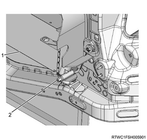
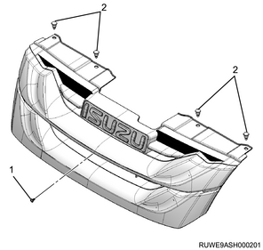
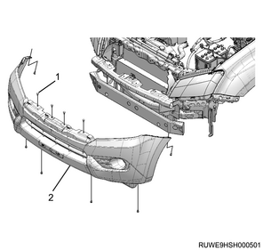
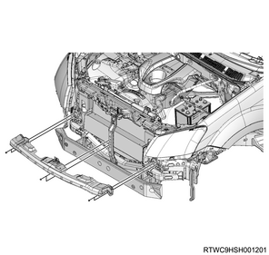
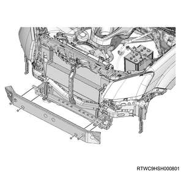
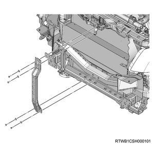
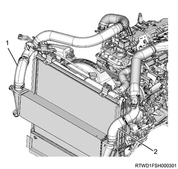
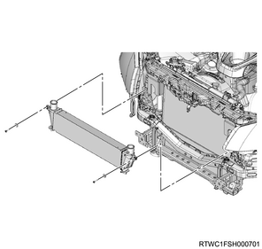

Intercooler removal (4JK1)
1. Intercooler safety information
Caution
- If oil builds up inside the intercooler, remove the drain plug to drain the oil.
1. Remove the drain plug from the intercooler.
Note
- Put the hand into the bumper opening and remove the drain plug with a tool.
2. Drain the engine oil from the intercooler.
Note
- Prepare a shop cloth under the drain plug to catch the drained oil with it.
3. Install the drain plug to the intercooler.
Note
- Confirm that the engine oil has been drained before installing the drain plug.
Tightening torque： 1.2 N・m { 0.12 kgf・m / 10.6 lb・in }

- Intercooler
- Drain plug
2. Battery ground cable disconnect
1. Open the engine hood assembly.
2. Disconnect the battery ground cable from the battery.
Caution
- Do not disconnect within 1 minute after turning OFF the ignition switch.
3. Radiator grille removal
1. Remove the radiator grille from vehicle.
Note
- Remove the screws.
- Remove the 4 clips.

- Screw
- Clip
4. Underguard removal
Note
- The following applies to models with an under air deflector.
1. Remove the under air deflector from the frame.
Note
- Remove the 5 bolts and clip.

- Bolt
- Clip
Note
- The following applies to models with front and rear underguard.
2. Remove the front underguard from the frame.
Note
- Remove the 5 bolts.
3. Remove the rear underguard from the frame.
Note
- Remove the 4 bolts.

- Front underguard
- Rear underguard
- Bolt
Note
- The following applies to models with front and rear underguard and an oil pan guard.
4. Remove the front underguard from the frame.
Note
- Remove the 5 bolts.
5. Remove the oil pan guard from the frame.
Note
- Remove the 4 bolts.
6. Remove the rear underguard from the frame.
Note
- Remove the 4 bolts.

- Front underguard
- Oil pan guard
- Bolt oil pan guard
- Bolt
- Rear underguard
5. Front bumper assembly removal
1. Remove the front bumper assembly from vehicle.
Note
- Remove the 10 clips.
2. Disconnect the harness connector from the fog light.

- Clip
- Front bumper assembly
6. Front bumper impact bar assembly removal
1. Remove the bumper seal from vehicle.
Note
- Remove the 6 clips on one side.

- Upper bumper seal
- Lower bumper seal
2. Remove the front bumper support from vehicle.
Note
- Remove the 6 nuts.

3. Remove the front bumper impact bar assembly from vehicle.
Note
- Remove the 4 fixing bolts.

7. Front end engine hood stay removal
1. Remove the front end engine hood stay from the frame.

8. Intercooler removal
1. Disconnect the intake air hose from the intercooler.
Note
- Disconnect it at both the turbocharger and intake throttle sides.

- Intake hose (turbocharger side)
- Intake hose (intake throttle side)
2. Remove the intercooler from the frame.
